Create (or edit) your analysis tree
The first step for analysis is to create your analysis tree: click Create/Run a new Analysis Tree. If you want to use the existing analysis tree, click Edit/Delete/Run an existing Analysis Tree.
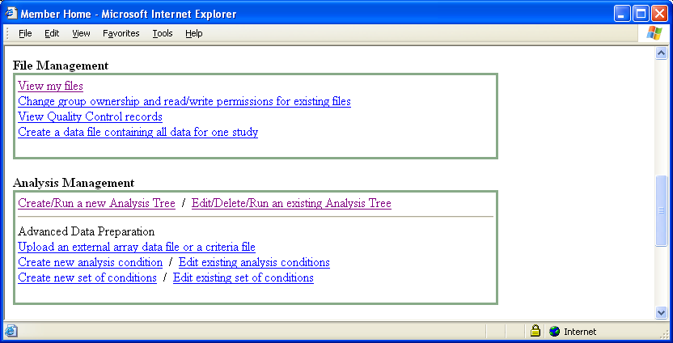In the next step, give your tree name in Analysis Tree Name and select a tree structure. The option initial node only let you start with one initial node while entire default tree let you start with four routine nodes. Next, choose a source of analysis input data: (1) choose one of Array Study, Analysis Set, and Public Data (2) click Choose Source and (3) select one in Add. If you want to use data from your array studies, select Array Study and if you want to use data from the analysis input data sets that were created before, select Analysis Set. Public Data can be selected to use public data. Clicking Next creates your analysis tree with your selected data set.
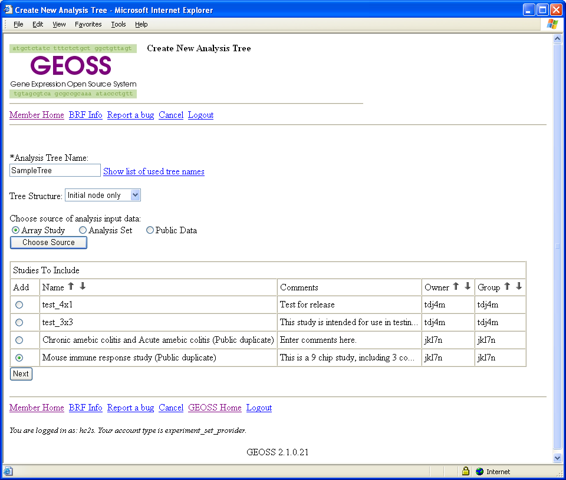The created analysis data set can be seen by clicking View my files in File Management.
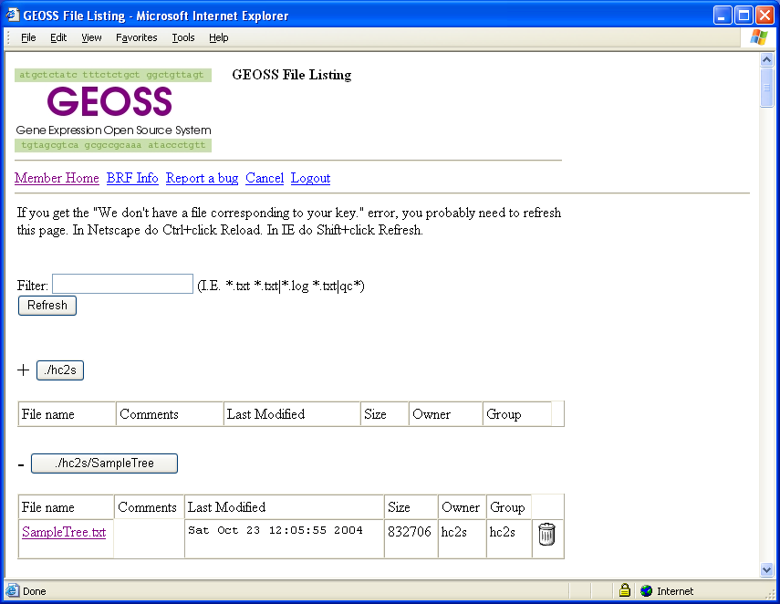
It is possible to construct an analysis data set file with more complex extraction combinations if needed; use the links of Advanced Data Preparation in Analysis Management or consult with GEOSS administrators.
QualityControl
Once an analysis tree is created, the first analysis routine is usually recommended with Quality Control. This provides statistical and graphical assessment of array data quality and the IQR (inter-quartile-range) and loess (local regression) normalization procedures.
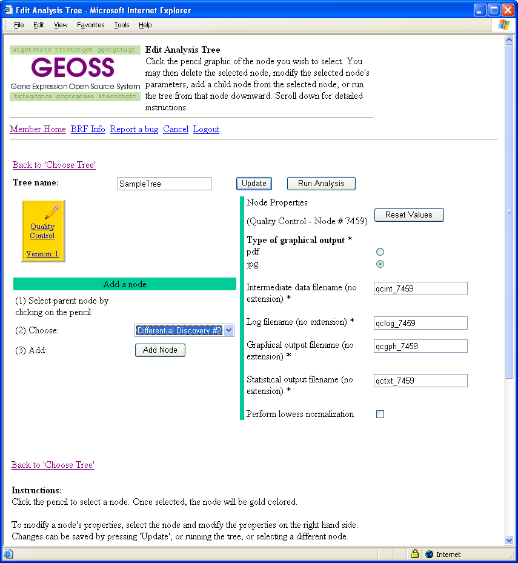When you run the simple tree by clicking Run Analysis, you see a message for your run. Clicking file repository takes you to the file repository like View my files, where five files are created by GEOSS.
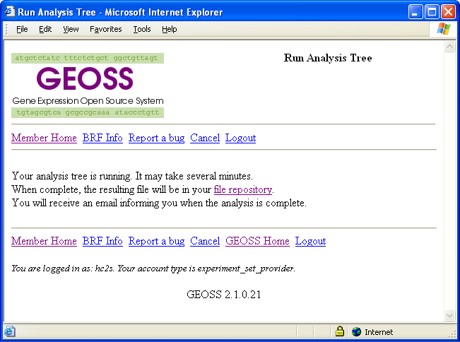 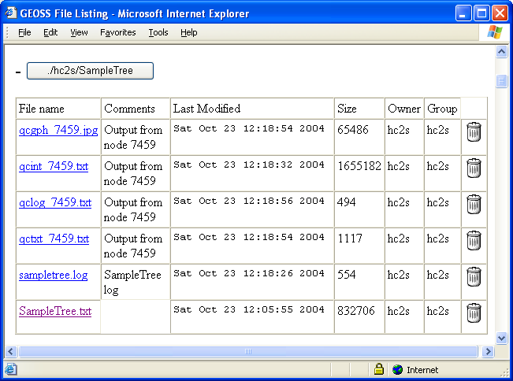The file you may want to look at is "qcgph.jpg". This is a scatter plot matrix graph of all the chips in the data file you previously chose.
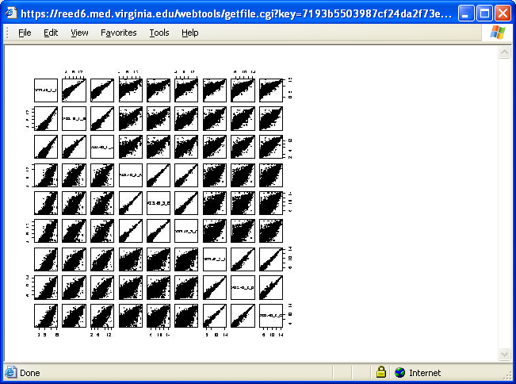These scatter plot show the correlation and distribution patterns among the replicates in the same condition and among the chips between different conditions. The assumption is that the replicate chips should look much more similar to each other than the chips from different conditions and that the relationship is generally linear across all intensity ranges. For example, if two chips are very similar and highly reproducible, the data points should concentrate along the 45-degree line in the scatter plot. The more the points are scattered away from the 45-degree line, the more dissimilar the chips are. Sometimes the scatter plots show a non-linear curvature, often near the origin. In that case it is recommended to do lowess normalization by choosing this option shown below.
This simple tree can be rerun with the lowess normalization by checking the box for Perform lowess normalization in the tree. If unusual patterns persist, it is recommended to consult with the GMB (GeneChip/Micorarray Bioinformatics) core staff (refer to the GEOSS home page for further information).
The second file you may want to look at is "qctxt.txt".
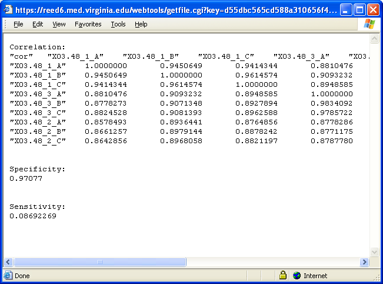This file includes specificity and sensitivity. Specificity, or reproducibility, is the average correlation between replicated arrays within each condition. Sensitivity is the difference between specificity and average correlation between non-replicated arrays. If sensitivity is large in the positive direction, there are often many genes differentially expressed between different conditions, vice versa.
Differential Discovery
The next node you may want to add to your analysis is Differential Discovery, which evaluates statistical significance of differential expression, together with fold change values. The two-sample t-test, Westfall and Youngs permutation test, LPE (Local Pooled Error) test, and SAM (Significance Analysis of Microarrays) test are performed in this node.
These statistical tests can be used to discover differentially expressed genes under two conditions. If there are more than two conditions, all pairs of the conditions are examined. The two-sample t-test is the most popular procedure for comparing means of two conditions and the Westfall and Youngs permutation test is a resampling-based procedure. Genes with small p-values from the tests are claimed as significant, i.e., differentially expressed. The LPE test has high statistical power for array data with a small number of replicates (e.g., duplicate or triplicate) because it precisely estimates baseline error variances by pooling genes with similar expression levels. The LPE test provides FDRs (False Discovery Rates), as well as z-statistics and p-values. FDR is used to control the average proportion of false positives among all positives, so select genes with low FDRs. SAM uses a variance stabilizing factor to improve variance estimation in low-replicated array data. SAM also provides FDR-based q-values as well as d-statistics. Note that LPE z-statistics/p-value and SAM d-statistic are computed as defaults; however, LPE FDR and SAM q-value can be computed by selecting boxes in the (Optional) differential discovery. The LPE FDR and SAM q-value require a considerable computing time.
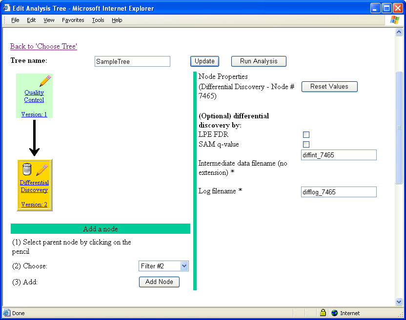When you run the tree, the main output file diffint.txt is produced and saved in the file repository (View my files in File Management). It is generally a big file (>2 MB). To view the content more easily, download the file onto your machine and then open it in MS Excel.
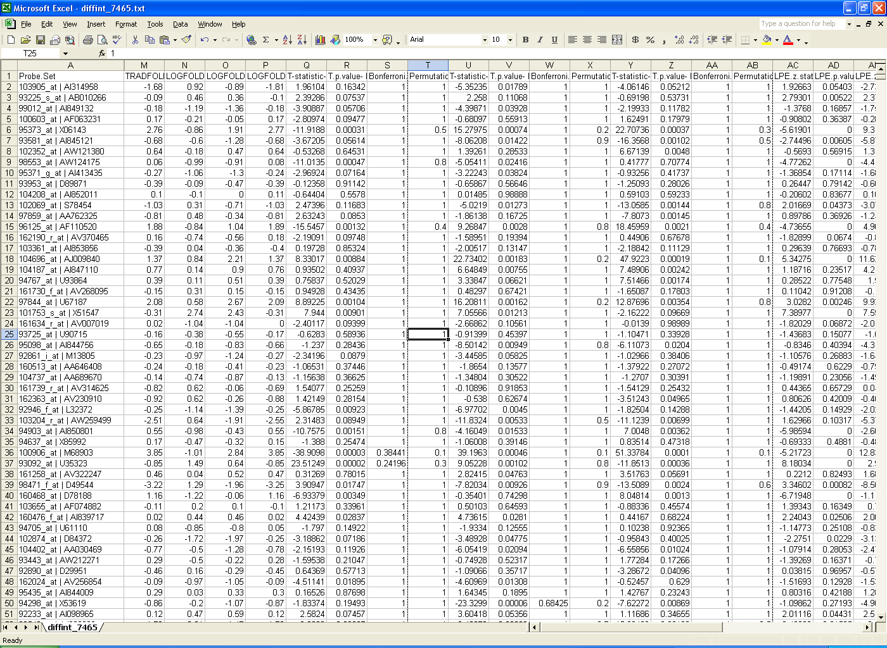There are quite a few columns, depending on the number of chips and conditions in the data file you chose in the analysis. For example, here are the column headings:
Columns 2 to 10 contain normalized expression data. For each pair of conditions, the results of t-test and permutation test (columns 17 to 28), LPE test (columns 29 to 34), SAM test (columns 35 to 37) are provided. Additional columns for LPE FDR and SAM q-value can be added if they are computed by checking their boxes. Fold-changes are presented in columns 11 to 16. A traditional fold change takes the average of gene expressions for each condition, divides the two averages, and then takes the log of the ratio. A log fold change transforms the expressions to log scale, takes the average, and then takes the difference between the two averages. These two different ways of fold-change calculation generally provide very similar results, but sometimes may differ due to extreme values and ratios; in those cases, the latter fold-change value may be preferred, but more careful attention is required for such outliers.
Filter
You may want to add the Filter node. This routine gives some options to subset the genes based on the statistical analysis results above and/or functional key words. To filter genes, this routine also provides annotations, such as gene symbol, gene names, unigene ID, locus ID, chromosome location, and gene ontology.
Since there are often several pair-wise comparisons between the conditions, you may need to select a specific pair of conditions for your selection. The filter routine can subset the gene probes based on one or two statistical criteria, such as p-value from the LPE test and a fold value from Log Fold Change. Note that if LPE FDR or SAM q-value is used for filtering, it must be run in Differential Discovery.
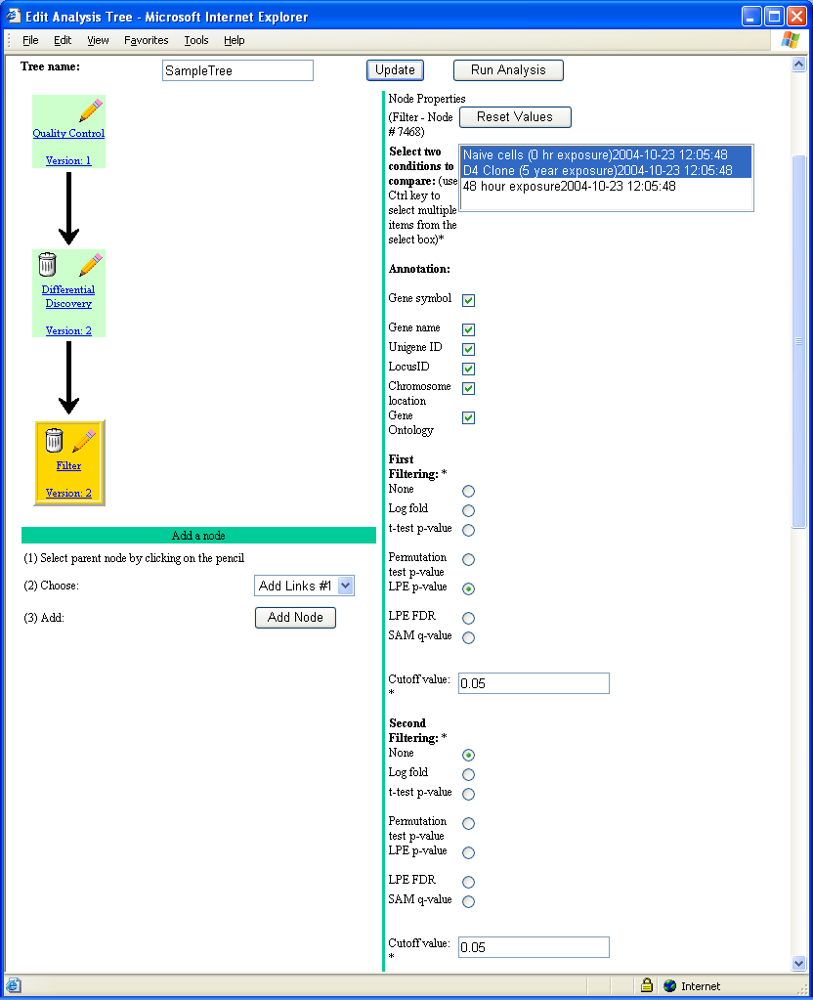 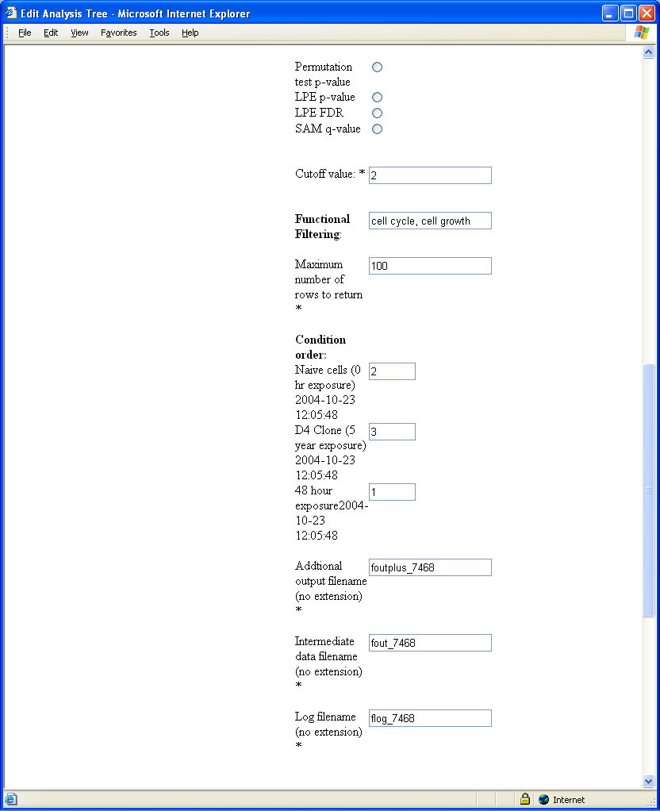A subset of genes can be obtained by entering one or more key words in Functional Filtering, where key words must be separated by a coma (,). You need to limit the number of genes probes for further investigation because if 1900 or more genes are kept, the files generated with Cluster will not be viewable with Acrobat Reader. The conditions of expression values be re-ordered by entering order numbers (e.g., 2, 3, 1) in Condition order. If you do not want to re-order, leave the boxes blanks
The results are saved in two text files foutplus.tx tand fout.txt, which contain the expression values of all the genes (across all conditions) that meet the selection criteria specified in the filter routine. The file fout.tt is used as an input for a cluster analysis and the file foutplus.txt contains statistical results in addition to expression values. For example, the file may be open as an Excel spreadsheet as shown below.
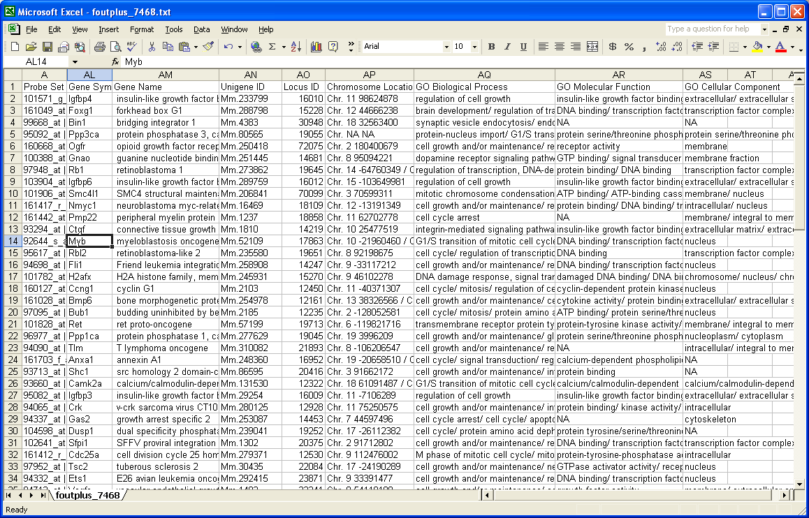Cluster
Next, you may want to run a clustering analysis on the subset. This is done by adding node Cluster, which performs the hierarchical clustering analysis. Log with base 2 transformation is usually taken for clustering as well as differential discovery. Users can choose a measure of similarity (or dissimilarity) between genes (or clusters of genes) and one of thee following clustering procedures: average linkage (average distance), complete linkage (maximum distance or farthest neighbor), and single linkage (minimum distance or nearest neighbor).
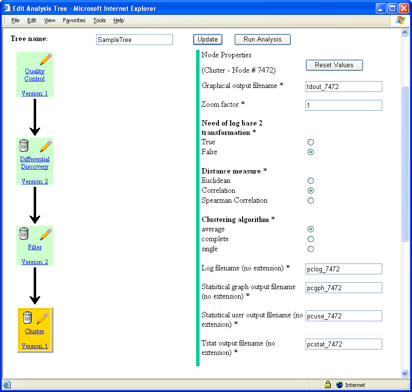The result of Cluster is a picture showing the clustering of the selected gene probes. It is saved in file "tdout.pdf". Running the tree with the five nodes produces several output files. You can see the list by clicking View my files in File Management
. 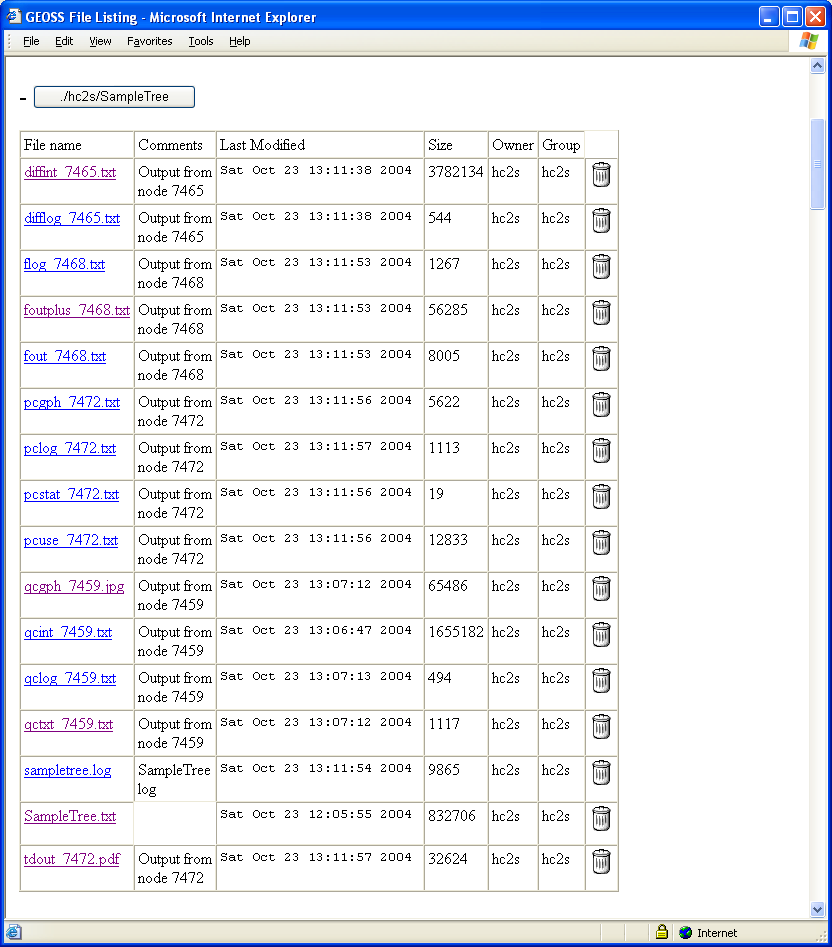From this run, "tdout.pdf" contains the hierarchical clustering tree with direct links to the NCBIs web site based their gene accession numbers. This graphic is zoomable (using a standard pdf viewer, such as Adobe Acrobat) and in high quality for manuscript and grant preparations.
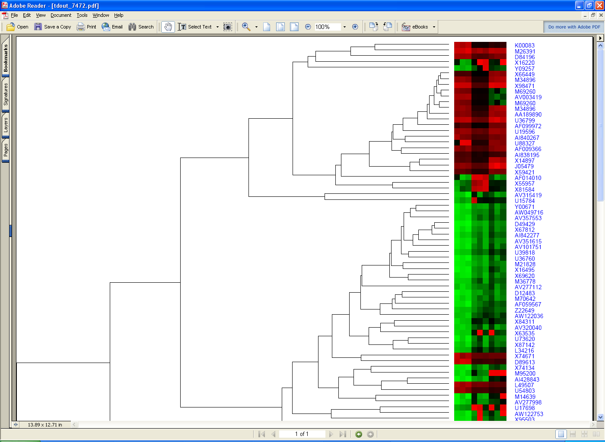In the tree dendogram, genes with similar expression patterns are linked in lower levels. This can be confirmed in a heat map. High expression intensities are represented by red, while low expression intensities are represented by green. Black indicates medium intensities.
For a direct link to the NCBIs web site in this plot, click a gene accession number, resulting in a link to the following website.
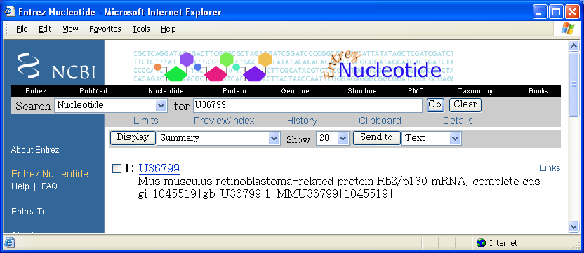Summary
For your first round of analyis, you may want to focus on the following five files from the last analysis tree shown above:
The rest of the files on the list are some log files that keep track of how a node has been run and what options have been selected for a particular node. Such log files may help you to reconstruct (reproduce) your analysis later. However, it may require familiarity with the use of GEOSS analysis interface for their full utlization. There are some intermediate data files that transfer the results of one node to the next. The interpretation of the results from a more complex analysis can be supported by the GMB core staff (refer to GEOSS home page for the procedure).